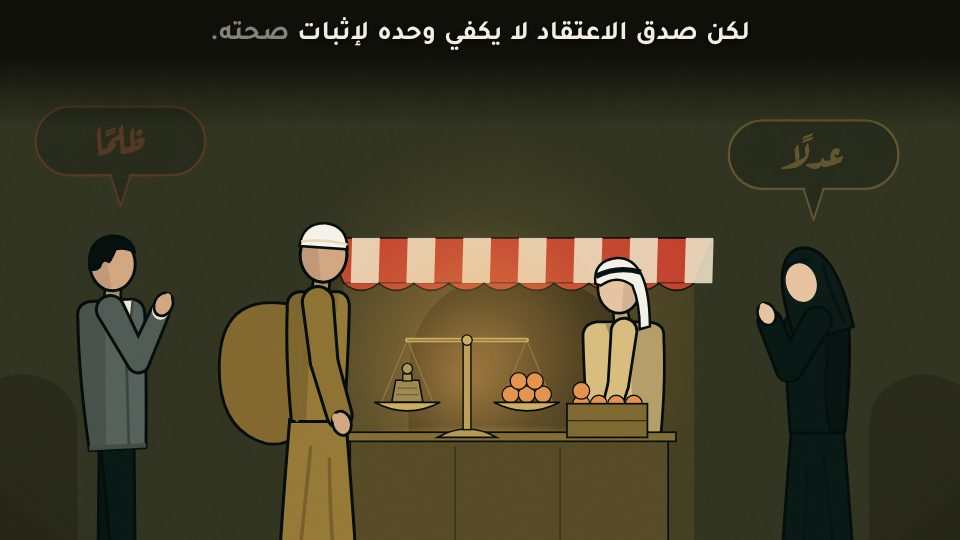
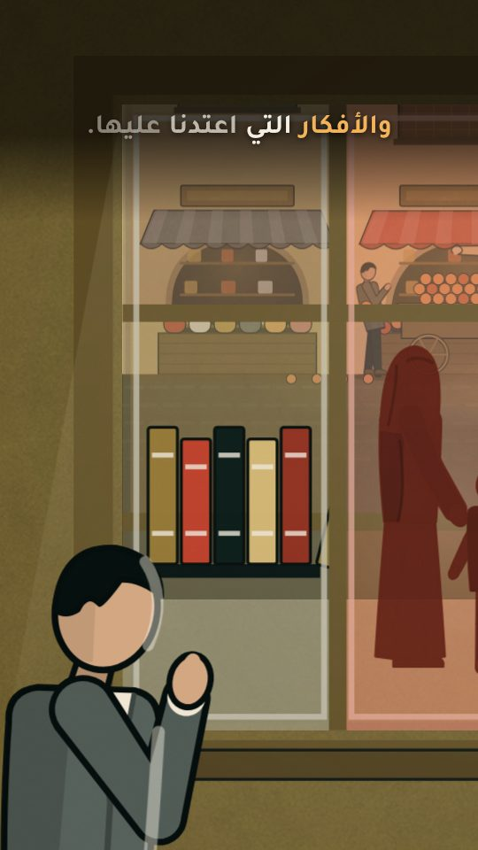
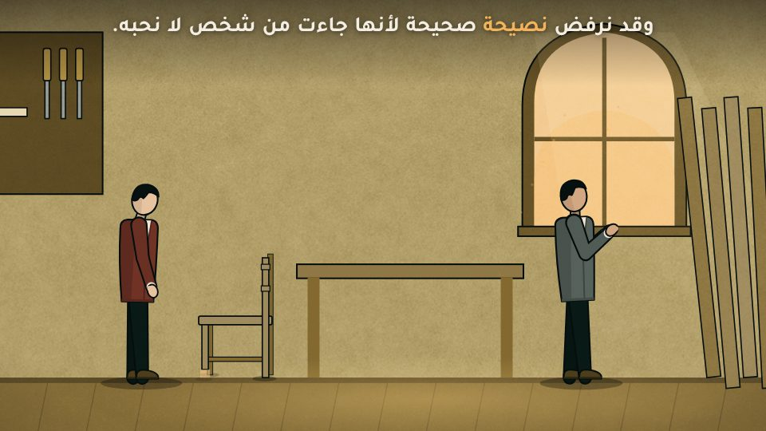
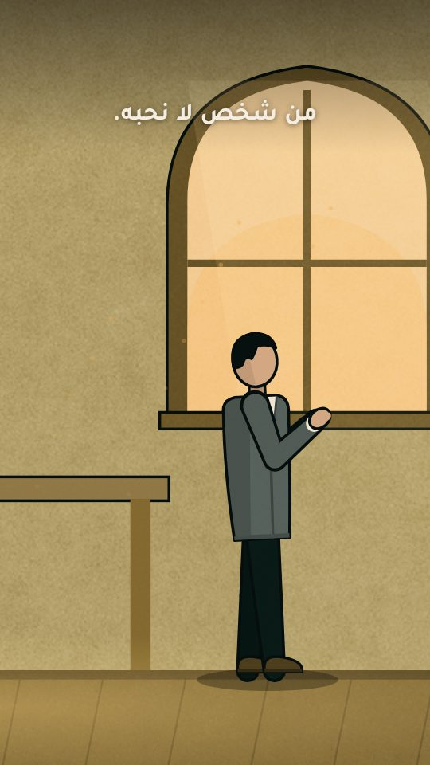
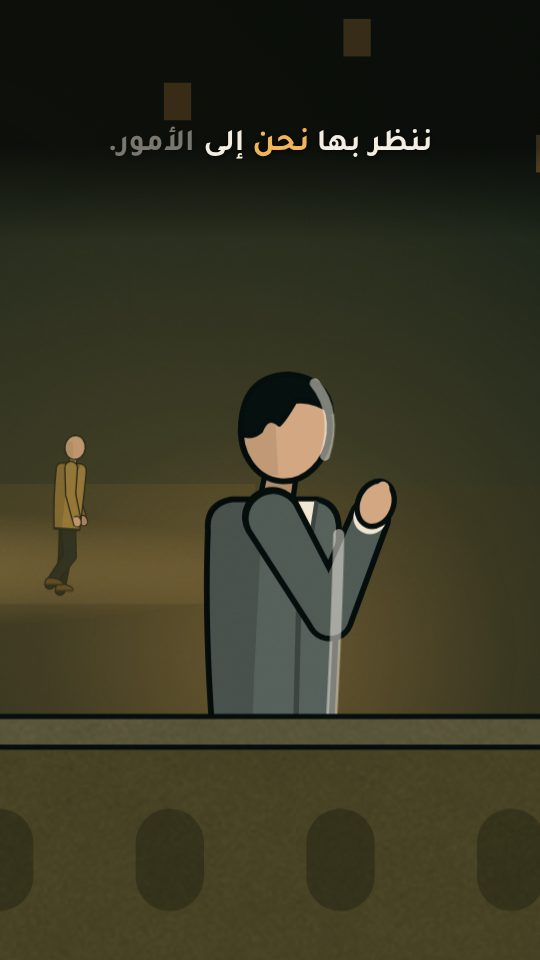

c1-s1 · حكايات الحارة · 7.5 ث دون تغيير


قد يشاهد شخصان الموقف نفسه، ثم يخرجان منه بحكمين مختلفين تمامًا.
c1-s2 · حكايات الحارة · 6 ث دون تغيير


الأول يراه ظلمًا، والثاني يراه عدلًا.
c1-s3 · حكايات الحارة · 9 ث دون تغيير


وقد يكون كلٌّ منهما صادقًا في وصف ما يعتقده، لكن صدق الاعتقاد لا يكفي وحده لإثبات صحته.
c1-s4 · حكايات الحارة · 4.9 ث دون تغيير


فالإنسان لا ينظر دائمًا إلى الأحداث بعين محايدة.
c1-s5 · حكايات الحارة · 6.7 ث معدّل


نحن نتأثر بتجاربنا السابقة، ومخاوفنا، والأشخاص الذين نحبهم، والأفكار التي اعتدنا عليها.
c1-s6 · حكايات الحارة · 4 ث دون تغيير


قد نصدق خبرًا لأنه يؤكد رأينا.
c1-s7 · حكايات الحارة · 5.8 ث معدّل


وقد نرفض نصيحة صحيحة لأنها جاءت من شخص لا نحبه.
c1-s8 · حكايات الحارة · 8.1 ث معدّل


وقد ندافع عن قرار اتخذناه، لا لقوة الأدلة عليه، بل لأن الاعتراف بالخطأ أصبح مؤلمًا.
c1-s9 · حكايات الحارة · 4 ث دون تغيير


وهنا تظهر مشكلة دقيقة:
c1-s10 · حكايات الحارة · 7.2 ث دون تغيير


أن الإنسان قد يخلط بين ما يراه صحيحًا، وما يتمنى أن يكون صحيحًا.
c1-s11 · حكايات الحارة · 11.4 ث دون تغيير


ولذلك فإن البحث عن الحق لا يبدأ دائمًا بالسؤال عن الآخرين، بل قد يبدأ بمراجعة الطريقة التي ننظر بها نحن إلى الأمور.
c1-s12 · حكايات الحارة · 13.2 ث معدّل


فليس كل ما نقتنع به حقًّا، وليس كل ما لا يعجبنا باطلًا. وقد تزداد المسألة صعوبة حين يختلط الحق بالباطل، فلا يظهر الخطأ في صورته الواضحة.